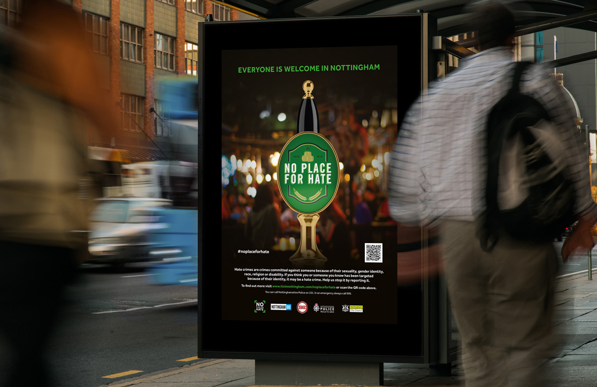

Safety Tips
Stay Alert
Always be aware of your surroundings, especially in less crowded areas. Avoid distractions like using your phone while walking.
Trust Your Instincts
If something feels wrong, trust your gut. It's better to be safe and avoid potentially dangerous situations.
Keep Your Belongings Secure
Always keep your belongings in sight and secure, especially in public places. Consider using anti-theft bags or locks for extra security.
Use Safe Transportation
When traveling late at night, use trusted and safe transportation options. Share your live location with a friend or family member.
Learn Basic Self-Defense
Knowing basic self-defense techniques can be incredibly valuable in ensuring your safety in threatening situations.
Stay In Well-Lit Areas
Avoid walking through dark, isolated areas. Stick to well-lit and populated paths whenever possible.
Sponsored
